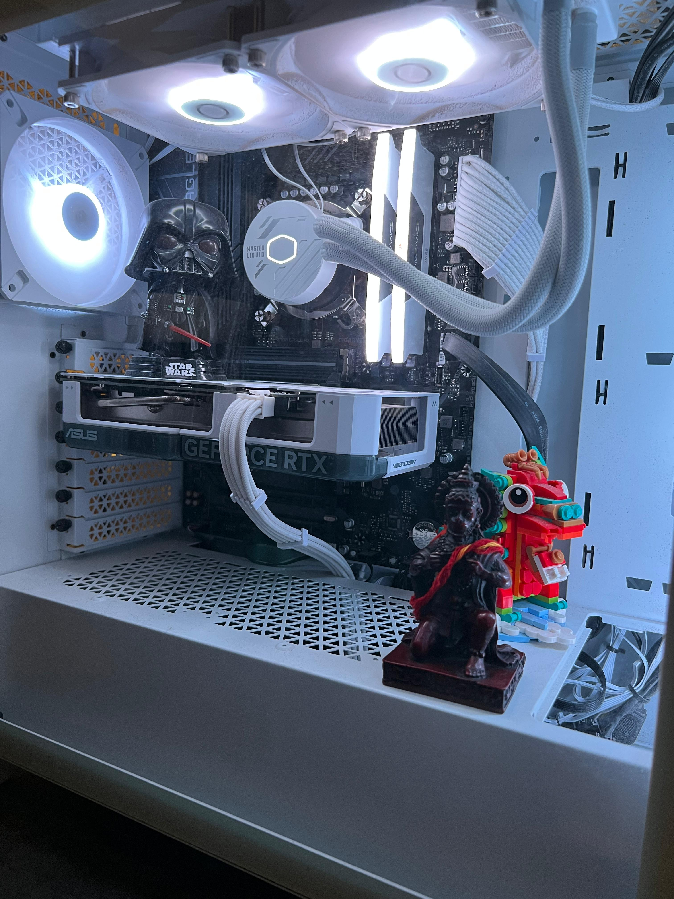
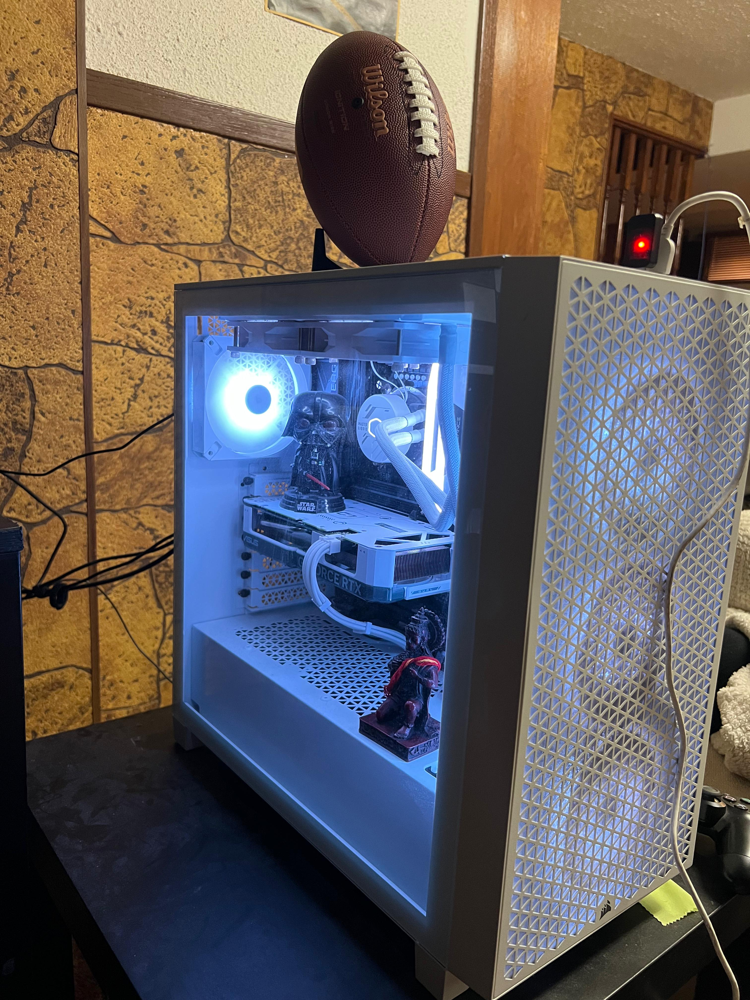
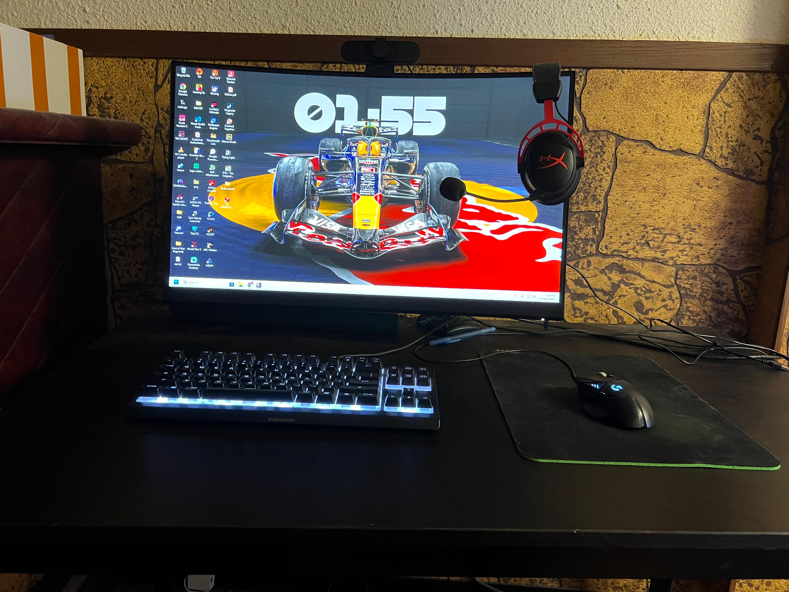
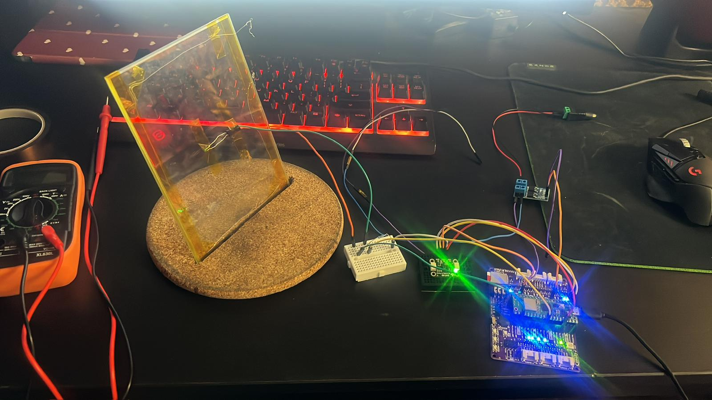
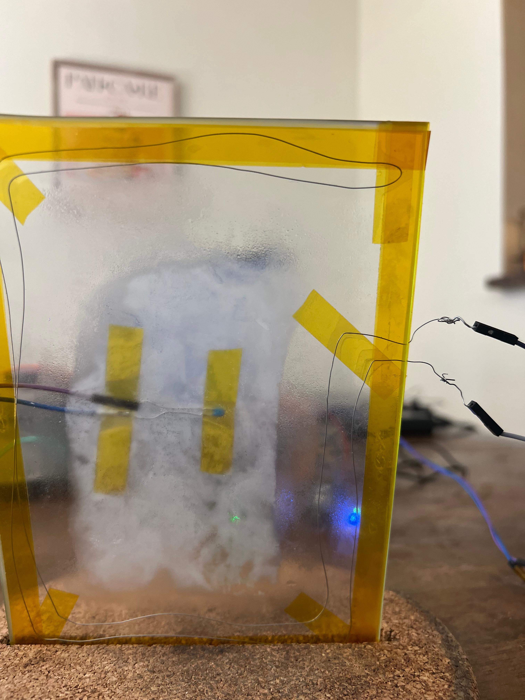
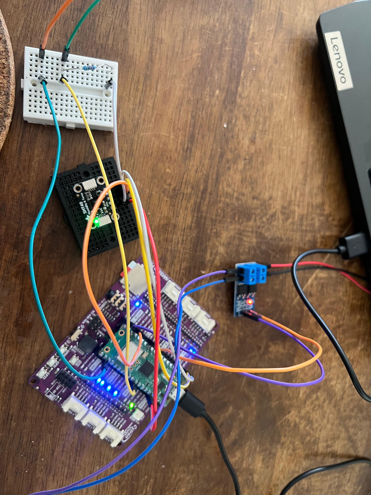

Data Analyst & Statistician
Turning data into decisions
Statistics student at the University of Manitoba. I build end-to-end analytical pipelines in R and Python — regression, time series, classification — and spend my free time building PCs, chasing bugs, and listening to jazz.
Featured Work
01 / 04
Binary classification on 7,043 telecom customers to predict churn and quantify its drivers. Odds ratios reveal month-to-month contracts and fiber optic service as the strongest risk factors — backed by Type II likelihood-ratio tests.
AUC ≈ 0.84 in both R and Python
github.com/Jrudani21/telco-churn-logistic-regression ↗
02 / 04
Modelled 731 days of Capital Bikeshare data using Poisson and Negative Binomial GLMs. Detected severe overdispersion (variance/mean = 357×) and used IRRs to quantify weather and seasonal effects on daily rentals.
NB model AIC ~1,200 better than Poisson
github.com/Jrudani21/bike-share-demand-count-regression ↗
03 / 04
Full Box-Jenkins SARIMA pipeline — log transform, stationarity testing (ADF/KPSS), ACF/PACF analysis, 36-month forecast with prediction intervals, and head-to-head comparison against Facebook Prophet.
SARIMA MAPE ~3–5% vs Prophet ~4–6%
github.com/Jrudani21/air-passengers-timeseries ↗
04 / 04
A comprehensive linear modeling showcase — simple linear regression, one-way ANOVA with Tukey post-hoc, two-way ANOVA with interaction, and ANCOVA with adjusted means. R² improves from 0.759 to 0.869 by adding species after flipper length.
ANCOVA adjusted R² = 0.869
github.com/Jrudani21/palmer-penguins-linear-models ↗
Capabilities
Languages & Tools
R (tidyverse, ggplot2, forecast)
Python (pandas, numpy, matplotlib)
scikit-learn · statsmodels · pmdarima
Git & GitHub
R Markdown
Statistical Methods
Linear & Logistic Regression
One-way / Two-way ANOVA & ANCOVA
Poisson & Negative Binomial GLMs
Time Series (ARIMA / SARIMA)
Hypothesis Testing & Inference
Model Evaluation
AUC / ROC Curves
Confusion Matrix & Classification Report
AIC / BIC Model Comparison
MAPE & Hold-out Validation
Residual Diagnostics & Ljung-Box
Beyond the Data
Designing and assembling custom rigs — from selecting components to cable management and overclocking. The hardware side of computing is as satisfying as the software.



Hands-on work with breadboards, microcontrollers, and circuit design. There's something deeply satisfying about making physical things respond to logic.



Listening to and exploring jazz — from classic Miles Davis to modern fusion. The improvisational structure of jazz feels a lot like exploratory data analysis.
Playing across genres — strategy, RPGs, and competitive titles. Gaming honed my instinct for systems thinking and pattern recognition long before stats did.
Finding edge cases and breaking things before others do. QA thinking comes naturally — if a model or program can fail, I want to find out how.
Background
I'm Janak Rudani, a statistics student at the University of Manitoba with a focus on applied regression, statistical modelling, and data analysis. My work spans linear models, generalized linear models, and time series — all implemented hands-on in both R and Python.
Every project in this portfolio shows the full analytical workflow: data cleaning, exploratory analysis, model selection, assumption checking, and actionable interpretation — the same pipeline expected in a professional data analyst role.
Outside of data, I build PCs, tinker with circuits, play and listen to jazz, game competitively, and enjoy breaking software through bug testing. The same curiosity that drives those hobbies drives my work with data.
I'm actively looking for data analyst internships and entry-level roles where I can apply statistical reasoning to real business problems — customer behaviour, demand forecasting, A/B testing, or operational analytics.
Full Name
Janak Rudani
Education
University of Manitoba — Statistics and Mathematics
Location
Winnipeg, Manitoba, Canada
Primary Languages
R · Python
GitHub
Get In Touch
Open to data analyst internships and entry-level roles. Feel free to reach out.
Janak25rudani@icloud.com